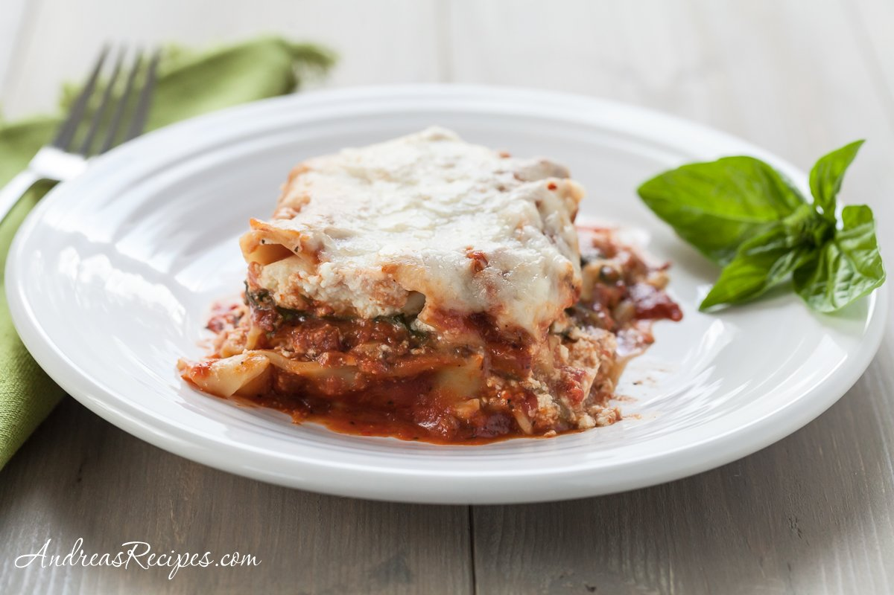

Home
Lasagna

Tasty Dish
Lasagna is a classic Italian comfort dish made with layers of pasta, rich meat sauce, creamy cheese, and baked until bubbly and golden. It's hearty, flavorful, and perfect for family dinners or meal prep since it reheats well and can feed several people.
Ingredients
- 12 lasagna noodles
- 1 pound ground beef
- cups tomato sauce or marinara sauce
- 1 cup ricotta cheese
- 2 cups shredded mozzarella cheese
- ½ cup grated parmesan cheese
- 1 egg
- 2 cloves garlic (minced)
- 1 tablespoon olive oil
- 1 teaspoon dried oregano
- Salt to taste
- Black pepper to taste
Steps
- Preheat the oven to 375°F (190°C).
- Cook the lasagna noodles according to package instructions, then drain and set aside.
- Heat olive oil in a pan over medium heat and sauté the garlic for about 1 minute.
- Add the ground beef and cook until browned.
- Stir in the tomato sauce, oregano, salt, and pepper, then simmer for about 10 minutes.
- In a bowl, mix ricotta cheese with the egg and half of the parmesan cheese.
- Spread a thin layer of meat sauce on the bottom of a baking dish.
- Add a layer of noodles, then spread ricotta mixture, meat sauce, and mozzarella.
- Repeat the layers until ingredients are used, finishing with sauce and mozzarella on top.
- Sprinkle the remaining parmesan cheese over the top.
- Bake for 30-35 minutes until the cheese is melted and bubbly.
- Let the lasagna rest for about 10 minutes before slicing and serving.